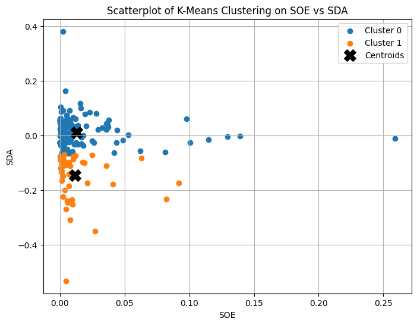
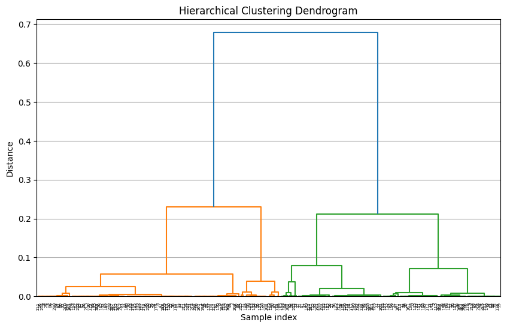
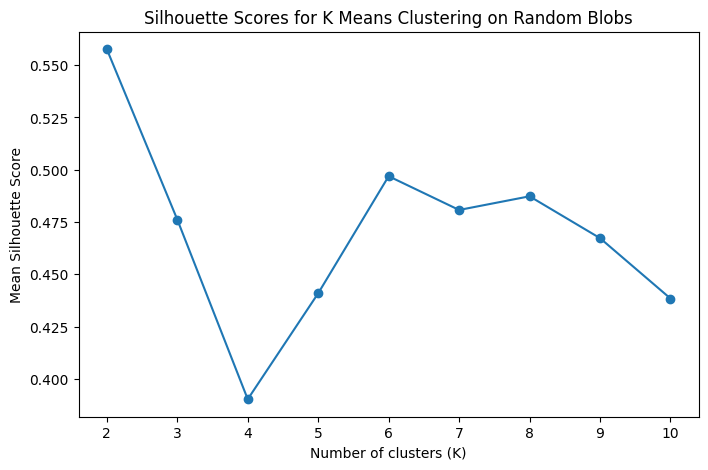
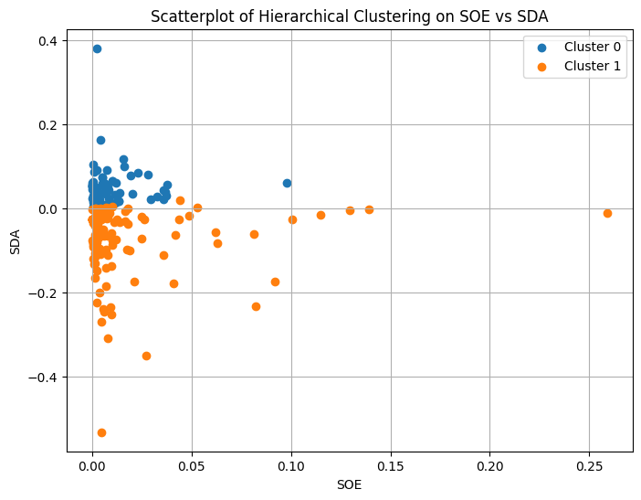

CSCI 5612 Machine Learning for Data Science:
Regional Climate Factor Analysis:
Clustering
Overview
Clustering is a data science method applied to unlabeled data to place similar data points into groups. Frequently, the "similarity" between data points is expressed in terms of distance, with various metrics being used. The most common measure of distance is Euclidean distance, which is generally very accurate but can be computationally expensive. One alternative is to not take the square root at the conclusion of the Euclidean distance formula. This distinction would make "punish" outliers more heavily and could produce better model performance. The second most common metric is Manhattan distance, which is significantly less costly to compute but is also far less accurate. Third is cosine similarity, which is most useful in less numeric contexts, such as text comparisons and vector-focused data. Each of these distance metrics can be used with the different types of clustering, although no single metric is guaranteed to perform the best.
The general clustering algorithm is as follows:
1. A pre-defined number of clusters, K, is chosen.
2. The initial positions for the centers of these clusters, called the "centroids", are somewhat-randomly chosen.
3. Points are assigned to the centroid nearest to them, using a distance metric like the ones described above.
4. After all points have been assigned, the centroid of the cluster is recalculated and moved.
5. From here, the previous two steps repeat to alternatingly assign points to clusters and move those clusters.
6. The process stops when a threshold has been passed, and the clusters are deemed to have stabilized.
However, there are multiple approaches to this general process.
One method of clustering is partitional, which results in strict cluster definitions. Points are separated into clusters based on distance metrics, but no further steps are taken. Compared to hierarchical clustering, the process stops here. This results in less information being gained in exchange for much faster compute times.
Another method is hierarchical clustering, where numerous clusters are formed in increasing size. While this process is far more computationally complex, it enables a user to form many "levels" of clusters and later choose a cutoff for the number of clusters to use, potentially by their own discretion. The decision for a cutoff can be informed by a dendrogram, a data visualization method that shows the levels of clusters as the roots of a plant.
Data Preparation
One limitation of clustering is the restriction of data type: unlabeled, numeric data. In the case that the data used were labeled, this would be a classification (rather than clustering) task. In the case that the data are not numeric, then a distance metric and centroids are not feasible or realistic.

Code Implementation
The code used to perform K Means Clustering, Hierarchical Clustering, and the Silhouette Method can be found in this file:
https://github.com/Machoo/Regional_Climate_Factor_Analysis/blob/main/clustering.ipynb
Results
The two clustering methods used are not practical given the present datasets. This is due to the nearly 60 unique features, the number of which reduces the efficacy of these methods that are limited in dimensionality. However, this example of SOE (Sulfur Dioxide Exposure) and SDA (Sulfur Dioxide Growth Rate) does show some of the strongest relationship that can be found within the dataset. First, the silhouette method was utilized to find the optimal number of clusters.
With K = 2 found, K Means Clustering was performed to produce the following scatterplot and dendrogram.
Next, the process was repeated using Hierarchical Clustering, which produced the following scatterplot and dendrogram.
Between the scatterplots above, the cluster assignments are very similar. The hierarchical clustering method came closer to dividing the data along the 0 value on the y axis. This is likely the more correct clustering, although the result of K means clustering is still valid.
Conclusion
From these graphs, the clearest distinction is between countries with increasing and decreasing amounts of Sulfur Dioxide (SO2). Using the hierarchical clustering scatterplot as the probably-better clustering, the horizontal split is clear. In larger terms, countries with low exposure to SO2 tend to be gaining more of it. Countries with high exposure to SO2 tend to have their concentrations of it reducing. This may be explained by SO2-emitting countries introducing environmentally-friendly practices to reduce their pollution. Meanwhile, less-exposed countries seem to be relaxing restrictions on SO2 emissions.
Overall, clustering has too limited of a scope to be applied meaningfully to this dataset. While information can be found in isolated spaces, such as atmospheric SO2, these methods cannot produce comprehensive knowledge from the data.